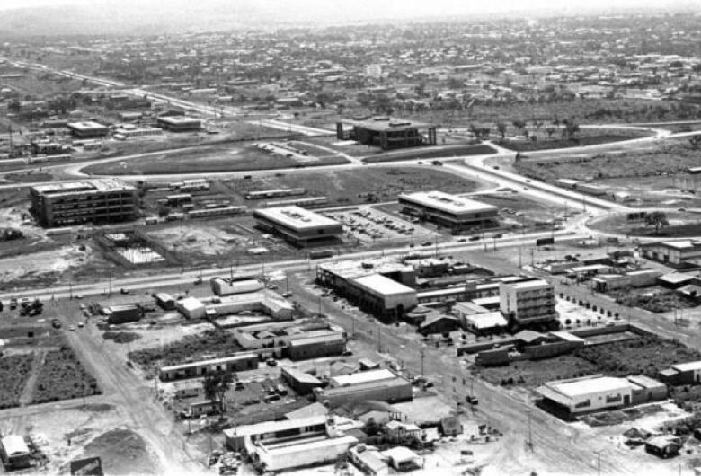
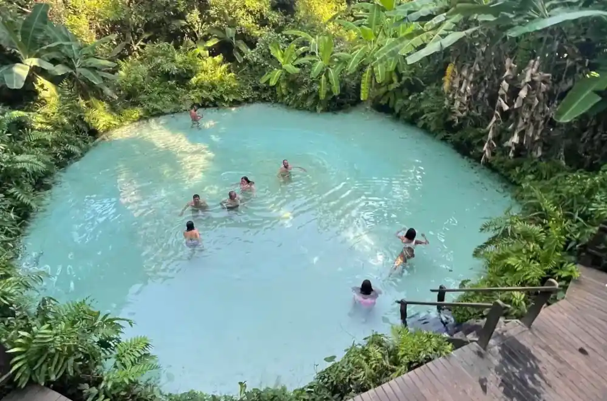
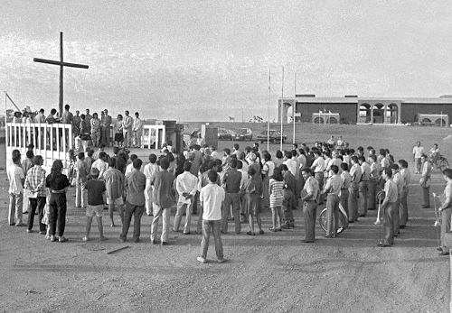
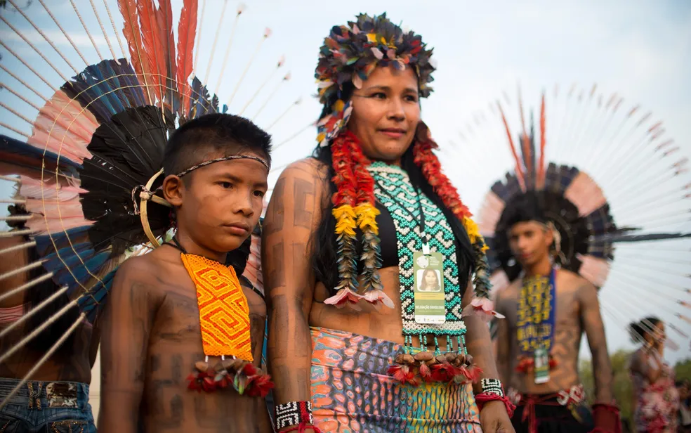
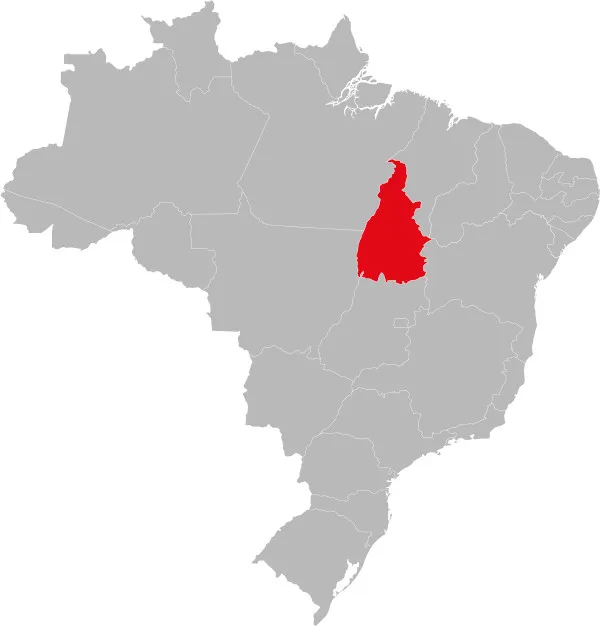

O Tocantins foi criado em 1988, desmembrado do norte de Goiás. A capital, Palmas, foi construída a partir de 1989. A região tem raízes indígenas e foi influenciada por bandeirantes e missionários desde o século XVII.
Destaques incluem o Jalapão, com dunas douradas e fervedouros, a Ilha do Bananal, a maior ilha fluvial do mundo, e as Serras Gerais. A capital Palmas também oferece praias de rio e vida cultural vibrante.
O Tocantins tem cerca de 1,51 milhão de habitantes, segundo o Censo 2022. A capital Palmas é a cidade mais populosa, com mais de 300 mil moradores.
A cultura tocantinense mistura tradições indígenas, afro-brasileiras e sertanejas. Destaques incluem o artesanato com capim dourado, festas juninas, cavalhadas e danças como o Suça.
O Tocantins possui 139 municípios. Abaixo, o mapa do estado:
Energia: Energisa Tocantins
Água: Agência Tocantinense de Saneamento (ATS)